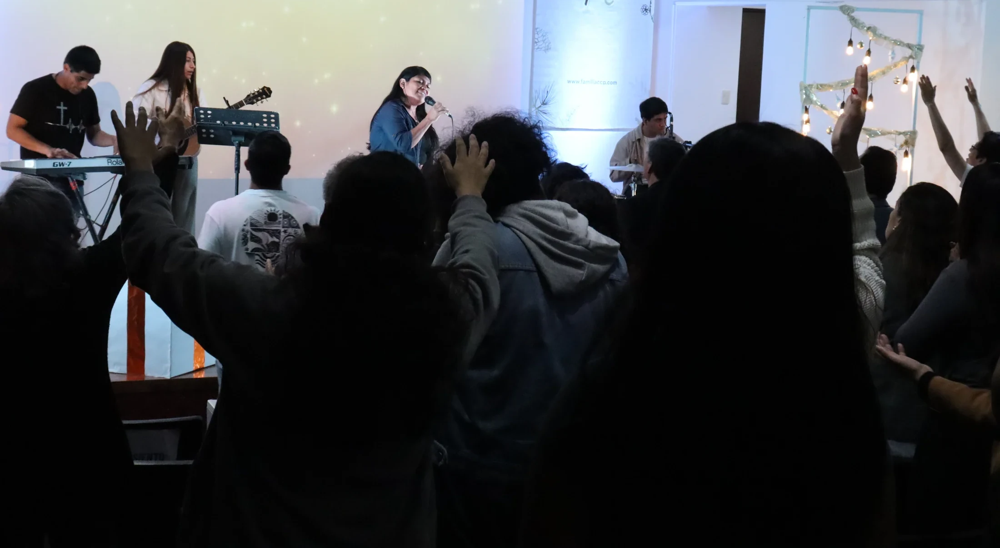
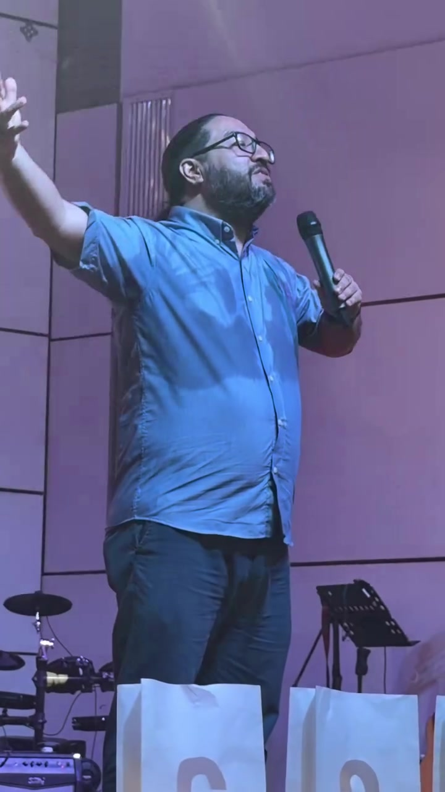
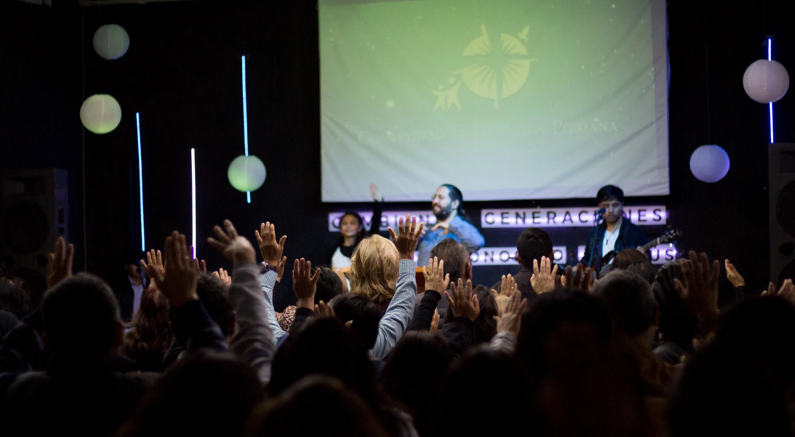
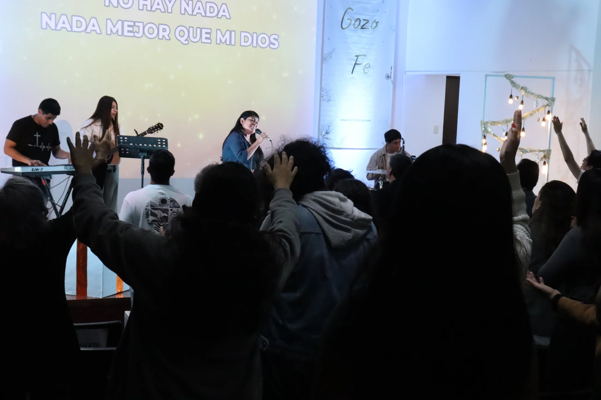
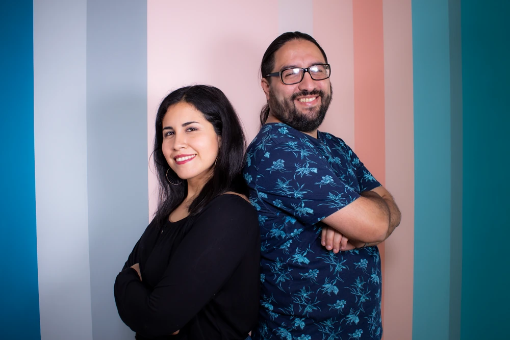
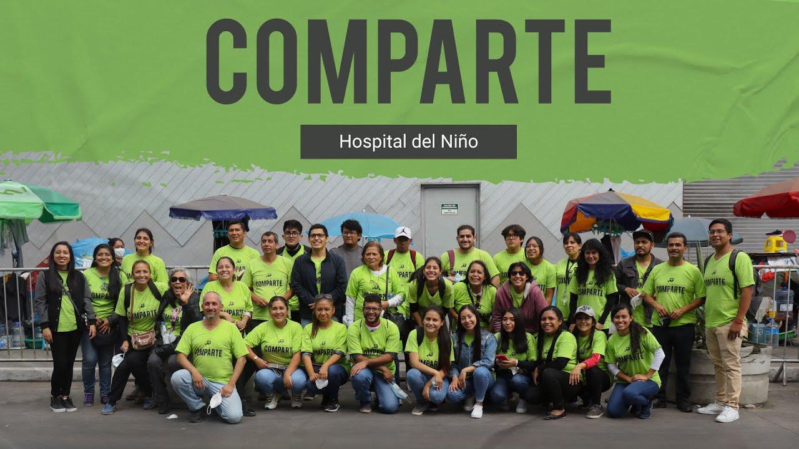
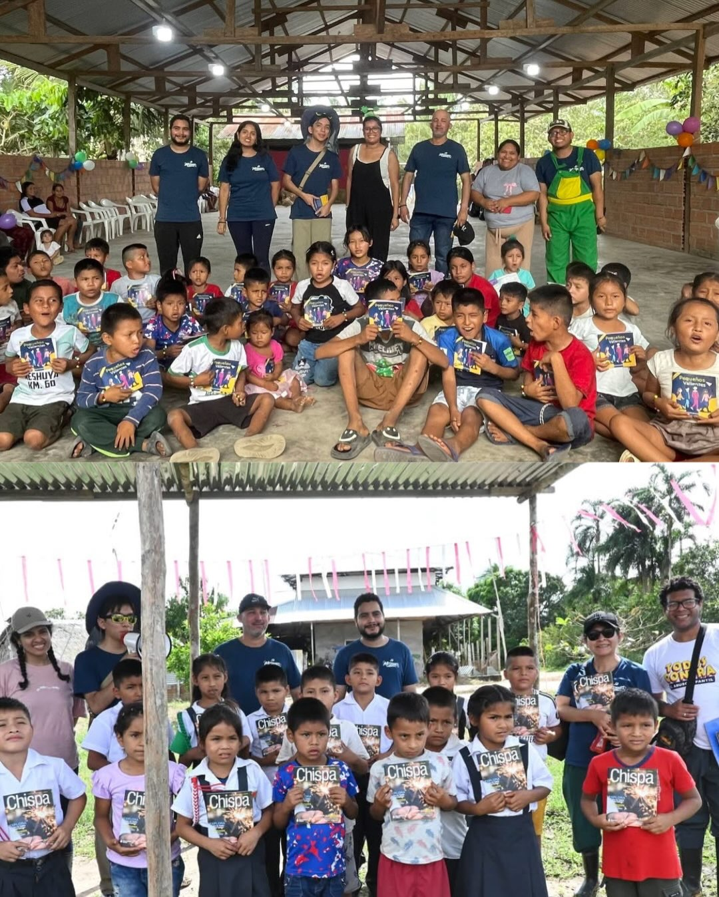

Formación bíblica2 años
CARISMA
Un camino de estudio de dos años, con distintos temas y certificado al concluir la formación.
ALTAR · Comunidad Cristiana
Somos una comunidad que camina en Su presencia, crece en Su Palabra y comparte la vida como familia.
«Tenemos un altar del cual los sacerdotes del tabernáculo no tienen derecho a comer.»




En Cristo encontramos a Dios, rendimos nuestra vida y somos enviados.
Somos una iglesia cristiana carismática. Queremos conectar a las personas con Dios y con la familia de la fe, crecer en Su Palabra y caminar en el Espíritu Santo.
Dios es bueno, todo el tiempo
Ser una comunidad de discípulos de Jesús que, transformados por Su presencia, impactan generaciones y extienden Su Reino hasta lo último de la tierra.
Conectar a las personas con Dios y con la familia de la fe, formar discípulos que viven en Su Palabra, caminan en el Espíritu, viven en santidad, y enviarlos a llevar el Evangelio a otros.
Así vivimos nuestra fe
Una familia que camina junto a esta comunidad, con el deseo de conectar, formar y enviar discípulos de Jesús.
Escucha nuestros mensajes
Una historia de fe que sigue escribiéndose.
Honramos la memoria de nuestro pastor fundador, Hernán Paredes.Conoce parte de su legadoEspacios para conocer la Palabra, compartir la vida y seguir creciendo como discípulos de Jesús.
Un camino de estudio de dos años, con distintos temas y certificado al concluir la formación.
Un curso breve de 12 capítulos para conocer los fundamentos de la fe cristiana y crecer como discípulo de Jesús.
Un espacio para profundizar en libros de la Biblia y llevar lo que aprendemos a la vida.
Las casas de vida son un espacio para compartir la fe y caminar juntos. Consulta en tu sede cómo participar.
Compartimos el Evangelio con nuestros vecinos y con las comunidades que visitamos en los viajes misioneros.
«Estamos aquí porque Dios está aquí». Con Comparte salimos al encuentro de nuestros vecinos para escucharlos, acompañarlos y orar con ellos. Así hacemos conocido a Jesús en nuestros barrios.

Ver video de archivo · Jornada de 2022En 2026 volvimos a Pucallpa para compartir el mensaje de Jesús. Organizamos actividades para niños, compartimos enseñanzas bíblicas y visitamos a familias de la comunidad.

Ver fotos de Pucallpa 2026 en Instagram¿Te gustaría participar en una salida o en un viaje misionero?
Pregúntanos en InstagramLa información de la próxima edición se compartirá en los canales oficiales de ALTAR.
Este año nos encontramos de manera presencial para celebrar juntos el aniversario de nuestra iglesia.
Publicamos las fechas y los detalles de cada actividad en las redes de ALTAR.
Encuentros ocasionales con expositores de otros países.
Libros para acompañar tu crecimiento, de distintos autores y de nuestros pastores. Descubre algunas de las publicaciones de nuestra comunidad.
Consulta por nuestros librosConsulta disponibilidad y formas de compra con la iglesia.


Estamos cerca. Conoce nuestras cinco sedes y ven a compartir la vida en comunidad.
y
10:30 a. m.
10:00 a. m.
5:00 p. m.
Además de la prédica, los más pequeños y los preadolescentes tienen sus propios espacios.
Un espacio para bebés y niños pequeños.
Un encuentro para preadolescentes.
Consulta con tu sede las edades y los horarios de cada grupo.
Queremos conocerte y acompañarte en tu camino con Jesús.
Contáctanos por WhatsAppEn San Isidro nos reunimos los domingos a las 10:00 a. m. y 5:00 p. m. Encuentra las direcciones y los horarios de todas las sedes en Encuentra tu sede. También compartimos en casas de vida durante la semana.
Sí. Conoce la Escuela dominical y Tweens en Domingos en familia.
Encuentra las prédicas y enseñanzas en nuestro canal oficial de YouTube.
En la sección Sigue creciendo puedes conocer Carisma y Café con… Escríbenos por Instagram para consultar las próximas convocatorias y los detalles de cada curso.